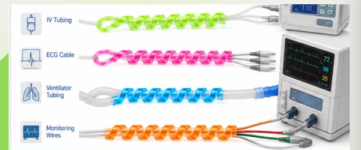
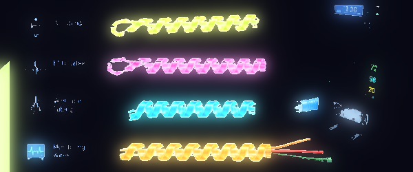

GlowLine wraps slide over your hospital's existing IV lines, ECG cables, ventilator tubing, and monitoring wires. They absorb light by day and glow through the night, so nurses can identify the right line at a glance — no flashlight, no overhead lights, no guessing.

☀️ Day — Absorbs Light
🌙 Night — Glows for Hours
The Problem
Nurses routinely face a difficult choice overnight: turn on the lights and disrupt patient sleep and recovery, or work in the dark and risk misidentifying a critical line during an emergency. Existing options — flashlights, neon tape, ambient night-lights — don't solve the underlying problem.
Overhead lighting is the default workaround, but it disrupts patients trying to rest and recover.
Interrupted sleep cycles are directly linked to slower patient recovery times.
Every extra second spent identifying the correct line in an emergency matters.
GlowLine's spiral silicone wraps slide over existing hospital wires and tubing — no new equipment, no retraining. They absorb ambient light during the day and glow through the night, giving nurses instant visual and tactile identification without switching on a single light.
Why Hospitals Choose GlowLine
| Feature | GlowLine | Lightengale | Flashlights | Neon Tape |
|---|---|---|---|---|
| Safe for clinical use | ✓ | ✓ | ✕ | ✕ |
| Durable | ✓ | ✕ | ✓ | ✕ |
| Versatile across line types | ✓ | ✕ | ✕ | ✕ |
From the Field
"I agree that we do have to turn on the lights, and there is not an existing solution for that."
— Shannon Buckner, Healthcare Professional
"They usually use flashlights, or turn on the lights, because no other solution exists."
— Heith Robertson, CRNA
Tell us about your hospital and how many rooms you'd like to outfit — we'll follow up with a tailored quote.
Request a Quote